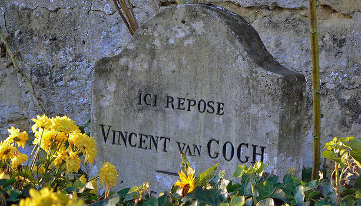
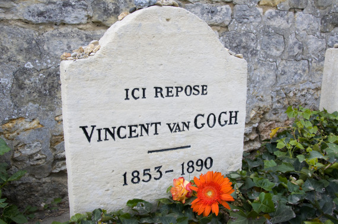
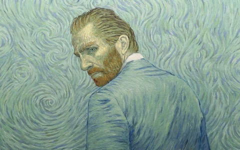

" Normality is a paved road: It’s comfortable to walk, but no flowers grow on it. "
How did Van Gogh died?
On July 27, 1890, Vincent van Gogh went out to paint in the morning carrying a loaded pistol and shot himself in the chest, but the bullet did not kill him. He was found bleeding in his room.
Van Gogh was distraught about his future because, in May of that year, his brother Theo had visited and spoke to him about needing to be stricter with his finances. Van Gogh took that to mean Theo was no longer interested in selling his art.
Van Gogh was taken to a nearby hospital and his doctors sent for Theo, who arrived to find his brother sitting up in bed and smoking a pipe. They spent the next couple of days talking together, and then van Gogh asked Theo to take him home.
On July 29, 1890, Vincent van Gogh died in the arms of his brother Theo. He was only 37 years old.
Theo, who was suffering from syphilis and weakened by his brother's death, died six months after his brother in a Dutch asylum. He was buried in Utrecht, but in 1914 Theo's wife, Johanna, who was a dedicated supporter of van Gogh's works, had Theo's body reburied in the Auvers cemetery next to Vincent.
Legacy :
Theo's wife Johanna then collected as many of van Gogh's paintings as she could, but discovered that many had been destroyed or lost, as van Gogh's own mother had thrown away crates full of his art.
Van Gogh Museum :
In 1973, the Van Gogh Museum opened its doors in Amsterdam to make the works of Vincent van Gogh accessible to the public. The museum houses more than 200 van Gogh paintings, 500 drawings and 750 written documents including letters to Vincent’s brother Theo. It features self-portraits, “The Potato Eaters,” “The Bedroom” and “Sunflowers.”
- "I put my heart and soul into my work, and I have lost my mind in the process."


